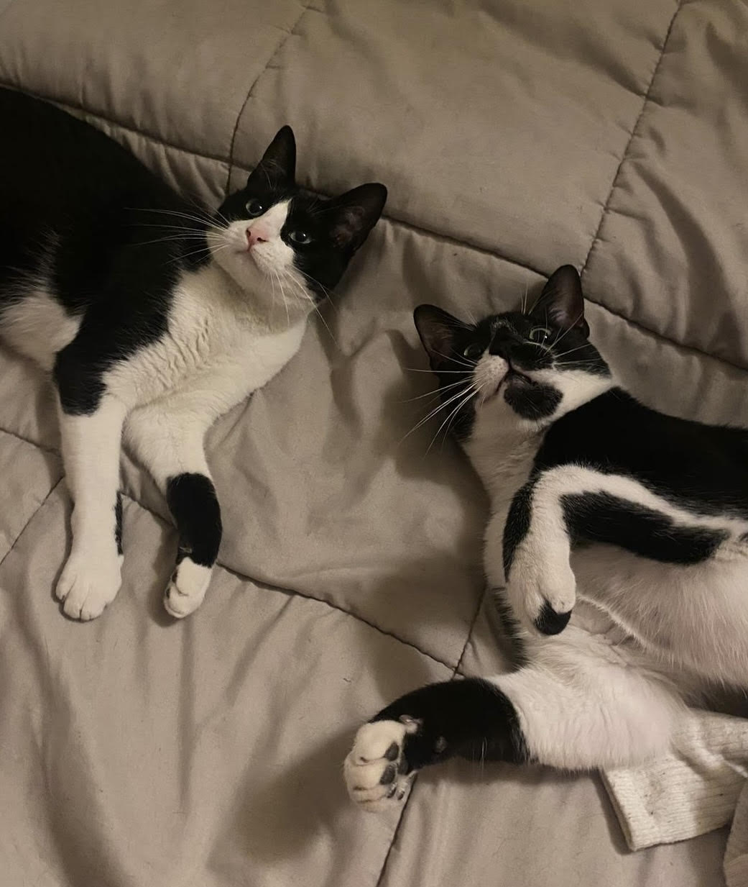
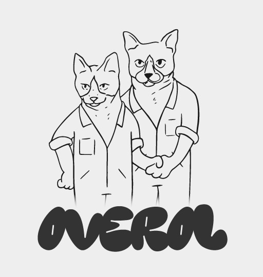

Knock, knock, Neo.
Nosotros

Somos un equipo de diseñadores gráficos que exploramos todas las formas de expresión visual, desde el diseño hasta la fotografía, la ilustración, el arte gráfico y la producción audiovisual. Cada proyecto es una aventura única, muy parecida a las que viven nuestros gatos cada día, que nos inspiran a crear la identidad visual de Overol.
We are a team of graphic designers who explore all forms of visual expressions, from design to photography, illustration, graphic art and audiovisual production. Each proyect is a unique adventure, much like the ones our cats experience every day, which inspire us to create the visual identity of Overol.
